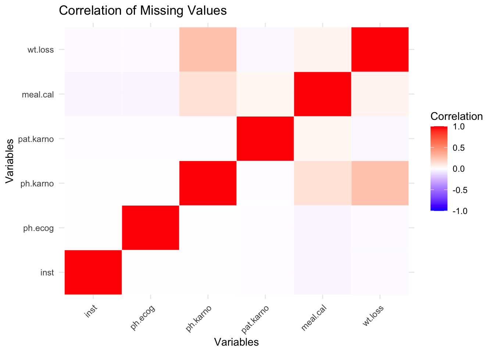

The lung dataset from the R survival package is being used for this project. This dataset was carefully selected to examine survival outcomes in patients with lung cancer and is frequently used to illustrate survival analysis approaches.
2.1.1 Data Collection
The dataset was gathered from patients with lung cancer as part of an observational study or clinical trial. Researchers and medical professionals monitoring lung cancer patients over a predetermined time period may have captured the data.
2.1.2 Format
The R software uses a data frame format for the lung dataset. Individual patients are represented by each row, while variables describing characteristics such as performance score, age, sex, censoring status, and survival time are represented by each column. It is a static dataset and does not receive regular updates.
2.1.3 Dimensions
Rows: The dataset includes 228 observations (patients).
Columns: There are 10 variables, which include:
a. time: Survival time in days.
b. status: Censoring status (1 if the event occurred, 0 if censored).
c. age: Patient’s age in years.
d. sex: Patient’s sex (1 = male, 2 = female).
e. ph.ecog: ECOG performance score (0 = asymptomatic, 1 = symptomatic but ambulatory, 2 = bedridden <50% of the time, etc.).
f. ph.karno, pat.karno, meal.cal, wt.loss, etc.
2.1.4 Potential Issues
Missing Values: Some observations have missing data, particularly in variables like ph.karno (Karnofsky performance score), meal.cal (caloric intake), and wt.loss (weight loss).
Data Sparsity: As it’s a small dataset, detailed subgroup analysis may lack statistical power.
Data Encoding: Certain variables are encoded as numeric values (e.g., sex and status), requiring careful interpretation to avoid confusion.
2.1.5 Data import
The dataset is part of the survival package in R and can be imported directly using the command data(lung) after loading the survival package. The code snippet for the same is shown below:
Code
# install.packages("survival")library(survival)suppressWarnings(data("lung")) # suppressing this warning, which shows up when we load the same data multiple time -> irrelevant warninghead(lung)
The lung dataset contains some missing values in specific variables. Understanding these missing values is essential as they can impact the accuracy of our survival analysis. To visualize the presence of missing values:
The variable meal.cal has the highest number of missing values, with the line extending to the right side of the chart, indicating approximately 45 missing values.
wt.loss has the second-highest number of missing values, followed by pat.karno.
Some variables, like time, status, sex, and age, have no missing values (indicated by points at zero on the x-axis).
Variables with shorter lines, such as ph.karno and ph.ecog, have fewer missing values, suggesting they have only a small portion of data missing.
2.2.2 Patterns in Missing Values
To analyze the missing values, a heatmap or bar plot can show which variables have missing entries. Additionally, checking correlations between missing values can help understand if there is a pattern (e.g., if patients with high Karnofsky scores also have missing caloric intake). Below is a heatmap to show the distribution in the data:
Code
# install.packages("dplyr")library(dplyr)
Attaching package: 'dplyr'
The following objects are masked from 'package:stats':
filter, lag
The following objects are masked from 'package:base':
intersect, setdiff, setequal, union
Code
missing_data <- lung |>select(where(~any(is.na(.))))missing_corr <-cor(is.na(missing_data) *1, use ="pairwise.complete.obs")library(reshape2)melted_corr <-melt(missing_corr)ggplot(melted_corr, aes(x = Var1, y = Var2, fill = value)) +geom_tile(color ="white") +scale_fill_gradient2(low ="blue", high ="red", mid ="white",midpoint =0, limit =c(-1, 1), space ="Lab",name="Correlation") +theme_minimal() +labs(title ="Correlation of Missing Values",x ="Variables", y ="Variables") +theme(axis.text.x =element_text(angle =45, hjust =1))

Observations:
Minimal or No Correlation Across Missing Values: Most of the cells in the heatmap are very light, close to white, indicating minimal to no correlation between missing values of different variables. This suggests that missing values in one variable do not strongly predict missing values in other variables.
Slight Patterns: There are a few faint shades of color, especially between some pairs like ph.karno and meal.cal or ph.ecog and wt.loss, but these correlations are very weak, suggesting only a very slight pattern in the missing values.
Conclusion: Based on this heatmap, there does not appear to be a meaningful correlation pattern between the missing values across variables. This suggests that each variable’s missing data is likely random or independent of other variables in terms of missing values.
2.2.3 Handling Missing Values
The strategies for handling missing data can be examined based on its distribution and importance:
Omitting missing values: If the number of missing entries is small, we may exclude those cases.
Imputation: For critical variables with many missing values, we could consider mean, median, or mode imputation or more sophisticated techniques, like multiple imputation, if needed.
Given that this dataset is small, it is better to impute values, than omit the missing ones.
For numerical columns (ph.karno, meal.cal, wt.loss), we can use median imputation to preserve the distribution.
For categorical variables (if any, such as sex), we could impute using the mode (most frequent value).
inst time status age
Min. : 1.00 Min. : 5.0 Min. :1.000 Min. :39.00
1st Qu.: 3.00 1st Qu.: 166.8 1st Qu.:1.000 1st Qu.:56.00
Median :11.00 Median : 255.5 Median :2.000 Median :63.00
Mean :11.09 Mean : 305.2 Mean :1.724 Mean :62.45
3rd Qu.:16.00 3rd Qu.: 396.5 3rd Qu.:2.000 3rd Qu.:69.00
Max. :33.00 Max. :1022.0 Max. :2.000 Max. :82.00
NA's :1
sex ph.ecog ph.karno pat.karno
Min. :1.000 Min. :0.0000 Min. : 50.00 Min. : 30.00
1st Qu.:1.000 1st Qu.:0.0000 1st Qu.: 77.50 1st Qu.: 70.00
Median :1.000 Median :1.0000 Median : 80.00 Median : 80.00
Mean :1.395 Mean :0.9515 Mean : 81.93 Mean : 79.96
3rd Qu.:2.000 3rd Qu.:1.0000 3rd Qu.: 90.00 3rd Qu.: 90.00
Max. :2.000 Max. :3.0000 Max. :100.00 Max. :100.00
NA's :1 NA's :3
meal.cal wt.loss
Min. : 96.0 Min. :-24.000
1st Qu.: 768.0 1st Qu.: 0.000
Median : 975.0 Median : 7.000
Mean : 938.3 Mean : 9.658
3rd Qu.:1075.0 3rd Qu.: 15.000
Max. :2600.0 Max. : 68.000
As shown above, the columns with higher missing values have been imputed successfully. There are three other columns, namely “inst”, “pat.karno”, and “ph.ecog” which have missing values. But the number of missing values is negligible. We will be dropping those rows. This is better to ensure that the integrity of the data is maintained, since we would not want to have too much bias by imputing for missing values. Code for the same is as shown below:
inst time status age
Min. : 1.00 Min. : 5.0 Min. :1.000 Min. :39.00
1st Qu.: 3.00 1st Qu.: 168.5 1st Qu.:1.000 1st Qu.:56.00
Median :11.00 Median : 266.0 Median :2.000 Median :63.00
Mean :11.05 Mean : 308.5 Mean :1.717 Mean :62.34
3rd Qu.:16.00 3rd Qu.: 408.5 3rd Qu.:2.000 3rd Qu.:69.00
Max. :33.00 Max. :1022.0 Max. :2.000 Max. :82.00
sex ph.ecog ph.karno pat.karno
Min. :1.000 Min. :0.0000 Min. : 50.00 Min. : 30
1st Qu.:1.000 1st Qu.:0.0000 1st Qu.: 80.00 1st Qu.: 70
Median :1.000 Median :1.0000 Median : 80.00 Median : 80
Mean :1.399 Mean :0.9417 Mean : 82.24 Mean : 80
3rd Qu.:2.000 3rd Qu.:1.0000 3rd Qu.: 90.00 3rd Qu.: 90
Max. :2.000 Max. :3.0000 Max. :100.00 Max. :100
meal.cal wt.loss
Min. : 96.0 Min. :-24.000
1st Qu.: 800.0 1st Qu.: 0.000
Median : 975.0 Median : 7.000
Mean : 940.6 Mean : 9.422
3rd Qu.:1075.0 3rd Qu.: 15.000
Max. :2600.0 Max. : 68.000
As seen above, there are no missing values in the dataset anymore.